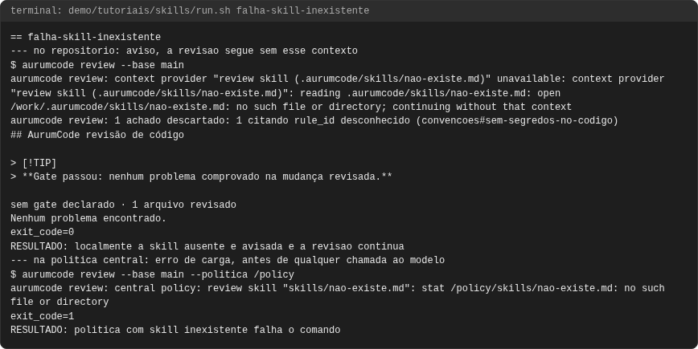
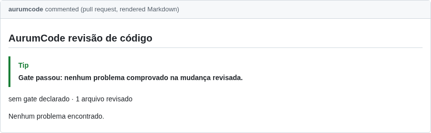
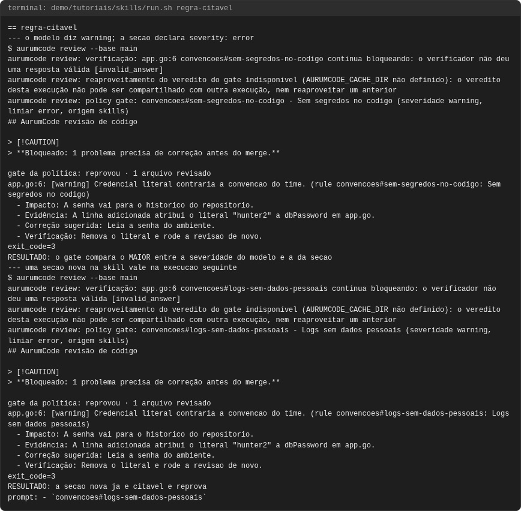
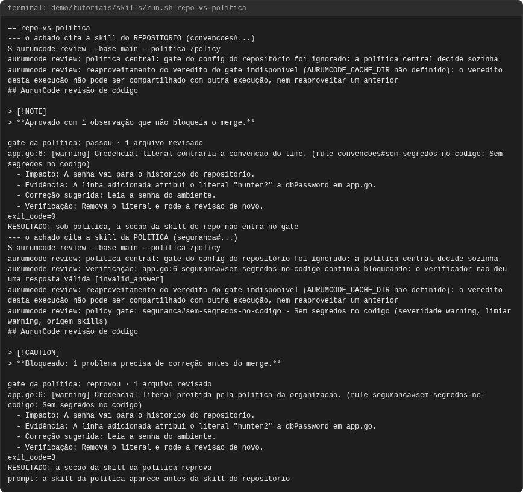
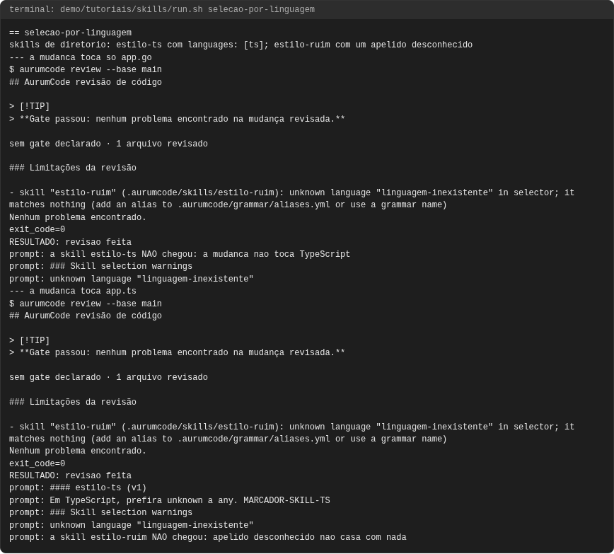
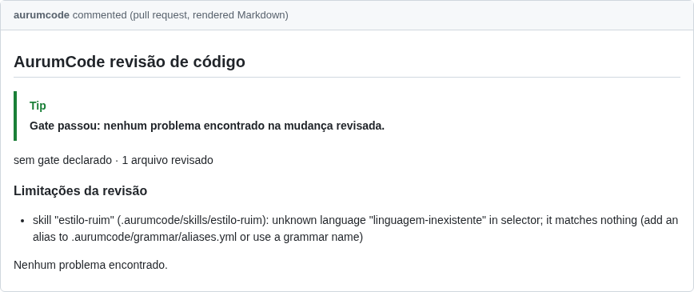
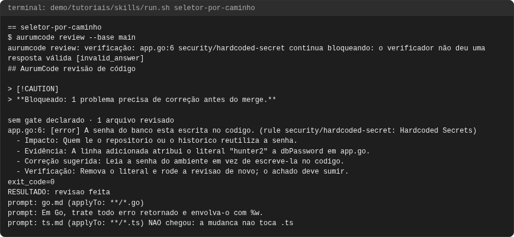
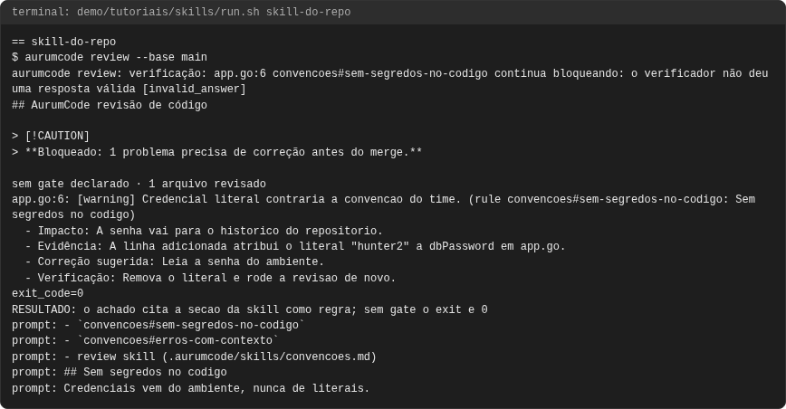
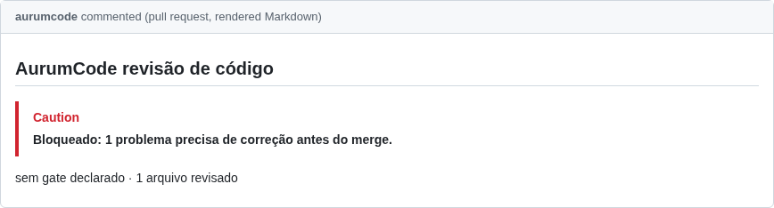

Tutorial: skills de convenção
Objetivo
Ensinar o time a revisar do seu jeito: escrever convenções em Markdown, fazer com que cheguem ao modelo, e saber quando uma convenção só orienta e quando ela reprova o check. Cinco usos, todos executados: a skill de convenção do repositório, o escopo por caminho, a seleção por linguagem e por apelido, a skill do repositório contra a da política, e a seção de skill como regra citável do gate.
Os blocos de configuração são os arquivos de demo/tutoriais/skills/,
byte a byte, e as saídas vêm de uma execução real registrada em
demo/tutoriais/skills/out/ (run.sh --check,
tests/acceptance/AUR-561.sh e tests/acceptance/AUR-565.sh conferem).
Pré-requisitos
git,dockerebash, e a imagem do produto, como em revisao.md (o atalhoaurumcodedo tutorial de revisão vale aqui; para repetir um caso à mão, definaTUTORIAL_DIR=/caminho/para/AurumCode/demo/tutoriais/skills(o atalho monta essa pasta em/fixtures) e exporteAURUMCODE_LLM_FIXTURE=/fixtures/fixture-repo.jsonoufixture-llm.json).- Nenhuma credencial: o modelo é um JSON determinístico
(
AURUMCODE_LLM_FIXTURE). - Para ver o que chegou ao modelo, os casos 1 a 3 usam
AURUMCODE_PROMPT_CAPTURE=<arquivo>, que grava o prompt enviado. É uma variável de observação, não de configuração.
bash demo/tutoriais/skills/run.sh all # executa os seis casos e grava out/
bash demo/tutoriais/skills/run.sh --check # compara out/ com expected/, sem docker
Conceitos em um minuto
- Uma skill é um arquivo Markdown de orientação, sem execução de script.
Listada em
review.context.skills, ela chega ao modelo como contexto. - Cada seção
##da skill vira uma regra citável, com id<arquivo-sem-.md>#<slug-da-seção>. O modelo pode citar esse id num achado. - Orientação não decide nada sozinha: quem reprova o check é o
gate(que o repositório declara, ou a política central impõe), nunca o texto da skill.
Caso 1: a skill de convenção do repositório
Uma skill de convenções em .aurumcode/skills/, listada na configuração:
# Convencoes do time
## Sem segredos no codigo
severity: error
Credenciais vem do ambiente, nunca de literais.
## Erros com contexto
Envolva erros com %w para a cadeia sobreviver.
review:
language: pt-BR
context:
skills:
- .aurumcode/skills/convencoes.md
A mudança do PR escreve uma senha no código. O modelo (aqui, o JSON de
fixture-repo.json) cita a seção da skill:
aurumcode review --base main
app.go:6: [warning] Credencial literal contraria a convencao do time. (rule convencoes#sem-segredos-no-codigo: Sem segredos no codigo)
exit_code=0
O que observar: o achado nomeia a regra convencoes#sem-segredos-no-codigo,
isto é, o arquivo da skill e a seção. O prompt que chegou ao modelo mostra
a skill e os ids citáveis. As linhas prompt: são conclusão do script (não é
saída do produto): o script imprime prompt: <trecho> quando grep -F acha o
trecho no arquivo de AURUMCODE_PROMPT_CAPTURE, e prompt: AUSENTE: ... se não achar.
prompt: - `convencoes#sem-segredos-no-codigo`
prompt: - `convencoes#erros-com-contexto`
prompt: - review skill (.aurumcode/skills/convencoes.md)
prompt: ## Sem segredos no codigo
prompt: Credenciais vem do ambiente, nunca de literais.
Por que o parecer diz "Alterações solicitadas" (Changes requested) e a saída é
0: sem gate declarado, o código de saída não reflete o veredito; com gate
declarado ele reflete (caso 5). A skill orientou, mas nenhum gate foi declarado. O caso 5
mostra como a mesma seção passa a reprovar.
Caso 2: escopo por caminho
Para uma orientação que só vale para certos arquivos, use
.aurumcode/instructions/*.md com applyTo (um glob). O arquivo só chega ao
modelo quando algum caminho alterado casa:
---
applyTo: "**/*.go"
---
Em Go, trate todo erro retornado e envolva-o com %w.
---
applyTo: "**/*.ts"
---
Em TypeScript, prefira unknown a any.
A mudança toca só app.go. Na linha ts.md ... NAO chegou, a conclusão é do
script (não é saída do produto): ela é impressa quando ts.md (applyTo não
ocorre no prompt capturado.
prompt: go.md (applyTo: **/*.go)
prompt: Em Go, trate todo erro retornado e envolva-o com %w.
prompt: ts.md (applyTo: **/*.ts) NAO chegou: a mudanca nao toca .ts
O que observar: a instrução de Go chegou e a de TypeScript não. Um arquivo sem
front matter applyTo nunca é aplicado: esquecer o escopo desliga a
orientação em vez de espalhá-la.
Caso 3: seleção por linguagem e apelidos
Uma skill também pode ser um diretório, .aurumcode/skills/<nome>/SKILL.md,
com um bloco de metadados que declara quando ela vale. languages: limita a
skill às linguagens dos arquivos alterados; os nomes aceitos são os da gramática
do produto e os apelidos do catálogo (ts → typescript, golang → go,
py → python...). Um apelido que o catálogo não conhece nunca é ignorado
em silêncio: é declarado no contexto enviado ao modelo (bloco
### Skill selection warnings) e no parecer. Uma skill sem languages: nem
paths: fica desligada, nunca universal. Estas são as duas skills do
repositório do caso:
---
name: estilo-ts
version: 1
languages: [ts]
---
Em TypeScript, prefira unknown a any. MARCADOR-SKILL-TS
---
name: estilo-ruim
version: 1
languages: [linguagem-inexistente]
---
Esta skill nunca chega ao modelo. MARCADOR-SKILL-RUIM
O caso roda duas revisões: uma cuja mudança toca só app.go e outra cuja
mudança cria app.ts. As linhas prompt: são conclusão do script (não é saída
do produto): o script imprime prompt: <trecho> quando o trecho ocorre no
prompt capturado, e a linha NAO chegou quando o marcador da skill não
ocorre nele.
--- a mudanca toca so app.go
prompt: a skill estilo-ts NAO chegou: a mudanca nao toca TypeScript
prompt: unknown language "linguagem-inexistente"
--- a mudanca toca app.ts
prompt: #### estilo-ts (v1)
prompt: Em TypeScript, prefira unknown a any. MARCADOR-SKILL-TS
prompt: ### Skill selection warnings
prompt: a skill estilo-ruim NAO chegou: apelido desconhecido nao casa com nada
exit_code=0
E o parecer de cada revisão declara o apelido desconhecido (a seção de limitações, na língua do repositório):
skill "estilo-ruim" (.aurumcode/skills/estilo-ruim): unknown language "linguagem-inexistente" in selector
O que observar: com a mudança só em Go a skill de TypeScript não chega ao
modelo; com app.ts ela chega, selecionada pelo apelido ts. A skill com o
apelido desconhecido não chega nunca, e o aviso aparece nas duas revisões, no
prompt e no parecer, mesmo quando o diff não toca a linguagem. Quando a skill
precisa valer só para um caminho, o caso 2 (applyTo) continua valendo, e
paths: no mesmo bloco de metadados faz o mesmo para skills em diretório.
Skills em diretório entram também numa política central
(<política>/.aurumcode/skills/); se uma skill da política e uma do
repositório declaram o mesmo seletor (mesmas linguagens, mesmos caminhos),
a da política vence e a do repositório não é enviada, com um aviso que nomeia
as duas. Um SKILL.md ilegível na política é erro de carga que nomeia o
arquivo (a revisão falha antes de qualquer chamada ao modelo); no repositório
só aquela skill é descartada, com um aviso que nomeia o arquivo, e as demais
continuam valendo.
Caso 4: skill do repositório contra skill da política
Uma organização impõe regras por política central (veja politica-central.md). A política tem a sua skill e o seu gate:
gate:
fail_on: [warning]
inconclusive: block
review:
language: pt-BR
context:
skills:
- skills/seguranca.md
# Seguranca da organizacao
## Sem segredos no codigo
Nenhum segredo literal e aceito em nenhum repositorio da organizacao.
O repositório do time tem a sua skill (convencoes.md) e tenta declarar o
próprio gate. Duas execuções com --politica, a primeira com um achado que
cita a skill do repositório, a segunda com um achado que cita a skill da
política:
aurumcode review --base main --politica /caminho/da/politica
aurumcode review: politica central: gate do config do repositório foi ignorado: a política central decide sozinha
app.go:6: [warning] Credencial literal contraria a convencao do time. (rule convencoes#sem-segredos-no-codigo: Sem segredos no codigo)
RESULTADO: sob politica, a secao da skill do repo nao entra no gate
aurumcode review: policy gate: seguranca#sem-segredos-no-codigo - Sem segredos no codigo (severidade warning, limiar warning, origem skills)
app.go:6: [warning] Credencial literal proibida pela politica da organizacao. (rule seguranca#sem-segredos-no-codigo: Sem segredos no codigo)
exit_code=3
RESULTADO: a secao da skill da politica reprova
prompt: a skill da politica aparece antes da skill do repositorio
(RESULTADO: e prompt: são conclusões do script, não saída do produto.)
O que observar: quem vence é a política. As duas skills chegam ao modelo, a da política primeiro e a do repositório
depois: a linha prompt: a skill da politica aparece antes da skill do
repositorio é conclusão do script (não é saída do produto), impressa quando o
corpo da seção da política ocorre em linha anterior à do repositório no prompt
capturado. Os dois achados aparecem no
parecer, mas só a seção da política reprova (saída 3). A seção do
repositório é orientação visível, que não entra no gate, e o gate do
repositório é descartado com um aviso nomeado.
Caso 5: a seção de skill vira regra citável do gate
Sem política, um repositório que declara o próprio gate faz as seções das
suas skills valerem:
review:
language: pt-BR
context:
skills:
- .aurumcode/skills/convencoes.md
gate:
fail_on: [high]
inconclusive: block
O modelo classificou o achado como warning, mas a seção Sem segredos no
codigo declara severity: error na primeira linha do corpo. O gate usa o
maior dos dois, então a declaração do autor da skill é um piso que o texto
do diff não consegue rebaixar:
aurumcode review: policy gate: convencoes#sem-segredos-no-codigo - Sem segredos no codigo (severidade warning, limiar error, origem skills)
exit_code=3
RESULTADO: o gate compara o MAIOR entre a severidade do modelo e a da secao
Acrescentar uma seção nova à skill já a torna citável na execução seguinte,
sem mudar código: o script acrescenta ## Logs sem dados pessoais e o modelo
passa a poder citar convencoes#logs-sem-dados-pessoais.
aurumcode review: policy gate: convencoes#logs-sem-dados-pessoais - Logs sem dados pessoais (severidade warning, limiar error, origem skills)
RESULTADO: a secao nova ja e citavel e reprova
prompt: - `convencoes#logs-sem-dados-pessoais`
(RESULTADO: e prompt: são conclusões do script, não saída do produto.)
O que observar: o motivo do bloqueio nomeia a skill e a seção. Um achado que cita um id que não existe é descartado e contado, nunca exibido.
Quando falha: a skill referenciada não existe
Se review.context.skills lista um arquivo que não existe:
continuing without that context
RESULTADO: localmente a skill ausente e avisada e a revisao continua
No repositório do dev, a ausência é aviso: a revisão continua sem esse
contexto, e os ids dessa skill deixam de existir, de modo que um achado que os
cite é descartado (veja 1 finding(s) discarded no out/ do caso). Leia os
avisos: um parecer Approve pode ter sido produzido sem a sua convenção. Na
política central a mesma ausência é erro de carga, antes de qualquer
chamada ao modelo:
aurumcode review: central policy: review skill "skills/nao-existe.md": stat /policy/skills/nao-existe.md: no such file or directory
exit_code=1
RESULTADO: politica com skill inexistente falha o comando
Por isso, em CI, convenções que precisam valer pertencem à política central.
Problemas comuns
- A skill não aparece no prompt: ela precisa estar em
review.context.skills(caminho relativo à raiz do repositório). Um arquivo em.aurumcode/skills/que ninguém lista não é lido. Num PR a configuração e o contexto vêm da branch base: a skill só passa a valer depois de integrada. - A seção não reprova: sem
gatedeclarado (ou semfail_onno limiar da severidade), a skill só orienta. Sob política central só as seções da política contam. - Glob sem aspas derruba a skill: nos metadados YAML de um
SKILL.md, um valor que começa com*é lido como alias e o bloco não é YAML válido. Escreva globs entre aspas:paths: ["src/**/*.ts"]oupaths: "*.ts". No repositório o avisorepository skill <caminho>/SKILL.md unavailablenomeia a skill descartada; na política central é erro de carga. severity:ignorado: precisa ser a primeira linha do corpo da seção, exatamenteseverity: error(ouwarning/info); outra grafia vale como o padrãowarning.- O id citado é descartado: o slug é minúsculo, qualquer sequência não
alfanumérica vira um
-. Copie o id da lista de regras do prompt, não o reescreva. - A skill em diretório não aparece:
languages:precisa casar com a linguagem de algum arquivo alterado (nome da gramática ou apelido do catálogo); semlanguages:nempaths:ela fica desligada. O aviso de apelido desconhecido diz qual nome corrigir. Num PR as skills em diretório vêm da branch base, como o resto do contexto.
Próximo passo: política central.
Como fica
Capturas geradas por scripts/docs/capturas.sh a partir das saídas gravadas em demo/tutoriais/skills/out/: o terminal de cada caso e, quando o caso publica, o comentario do PR e os status checks. O manifesto docs/assets/capturas/capturas.json registra o digest de cada insumo.
falha-skill-inexistente


regra-citavel


repo-vs-politica


selecao-por-linguagem


seletor-por-caminho


skill-do-repo

